非局部策略优化：维持多样性的协作探索
Non-local Policy Optimization via
Diversity-regularized Collaborative Exploration
页面尚未完成
Non-local Policy Optimization via
Diversity-regularized Collaborative Exploration
页面尚未完成
香港中文大学
团队合作帮助人们实现共同的目标。然而在现有的强化学习算法中，通常只有一个智能体或一个有很多分身的全局智能体在与环境交互并学习如何解决任务。如右图所示，由于不同初始化以及智能体所收集的经验的不同，智能体能探索到的那些地方（状态-动作空间）通常都被限制在有限的范围内。我们将这个问题称之为局部探索问题。
我们着眼于局部探索问题问题并提出了一种策略优化框架，名为“维持多样性的协作探索”（Diversity-regularized Collaborative Exploration，简称DiCE）。 DiCE结合了“协作探索”方法（Collaborative Exploration，CE）和“多样性正则”方法（Diversity Regularization，DR）。“协作探索”维护一个包含多个不同的智能体的团队并让他们分享知识。“多样性正则”则指导每个智能体的探索并维持着整个团队的多样性。我们在在线策略（on-policy）和离线策略（off-policy）场景下实现了DiCE框架，并将其与很强的基准算法如PPO和SAC进行比较。在MuJoCo运动环境内的实验结果表明DiCE能在大多数情况下取得超越基准的表现。
| 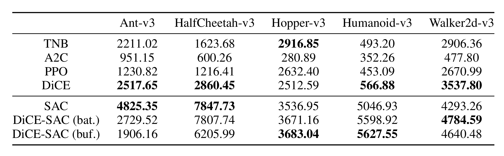 |
| 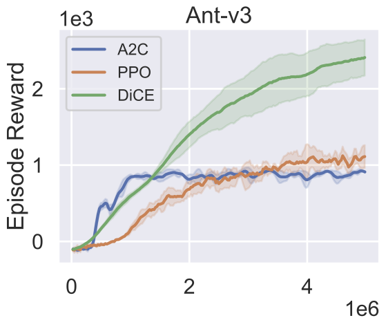 | 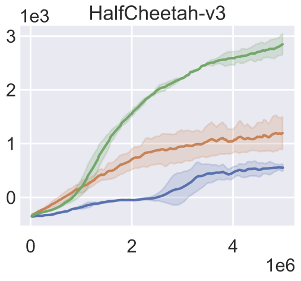 | 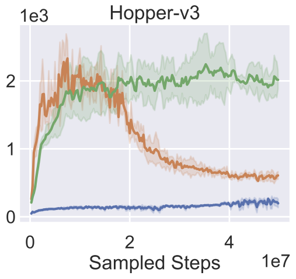 | 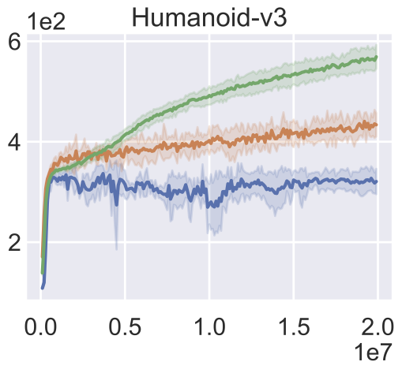 | 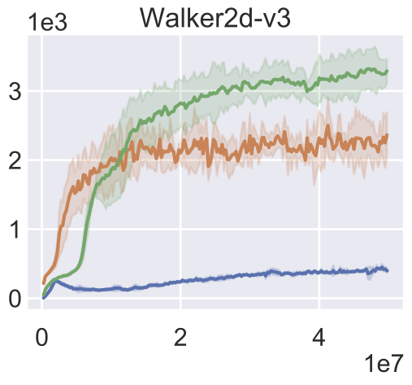 |
| 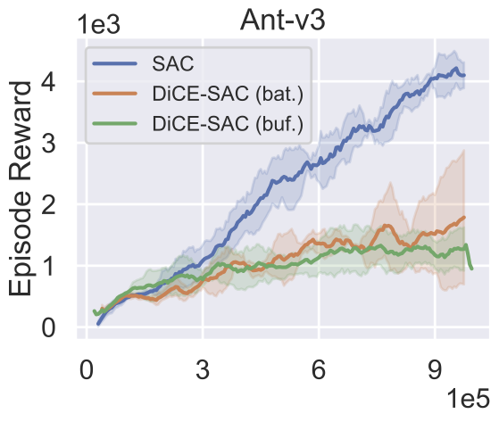 | 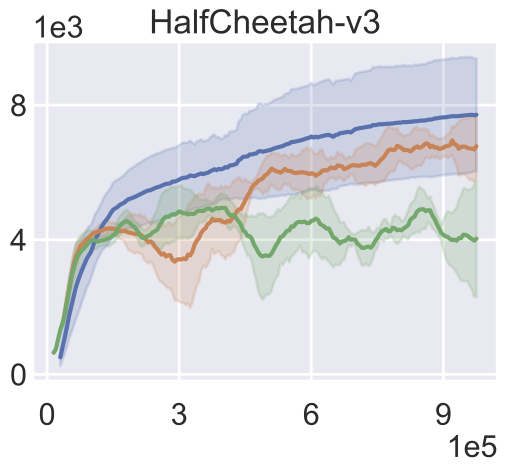 | 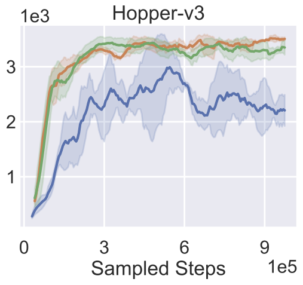 | 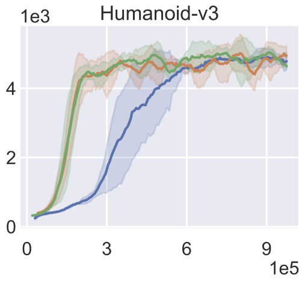 | 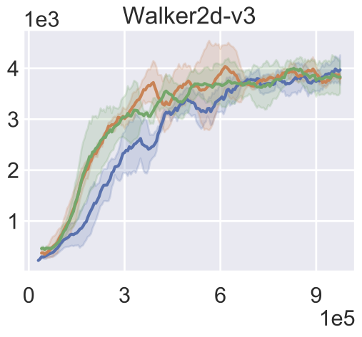 |